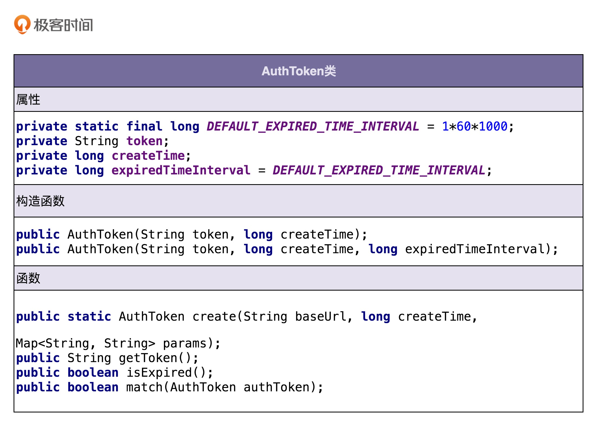
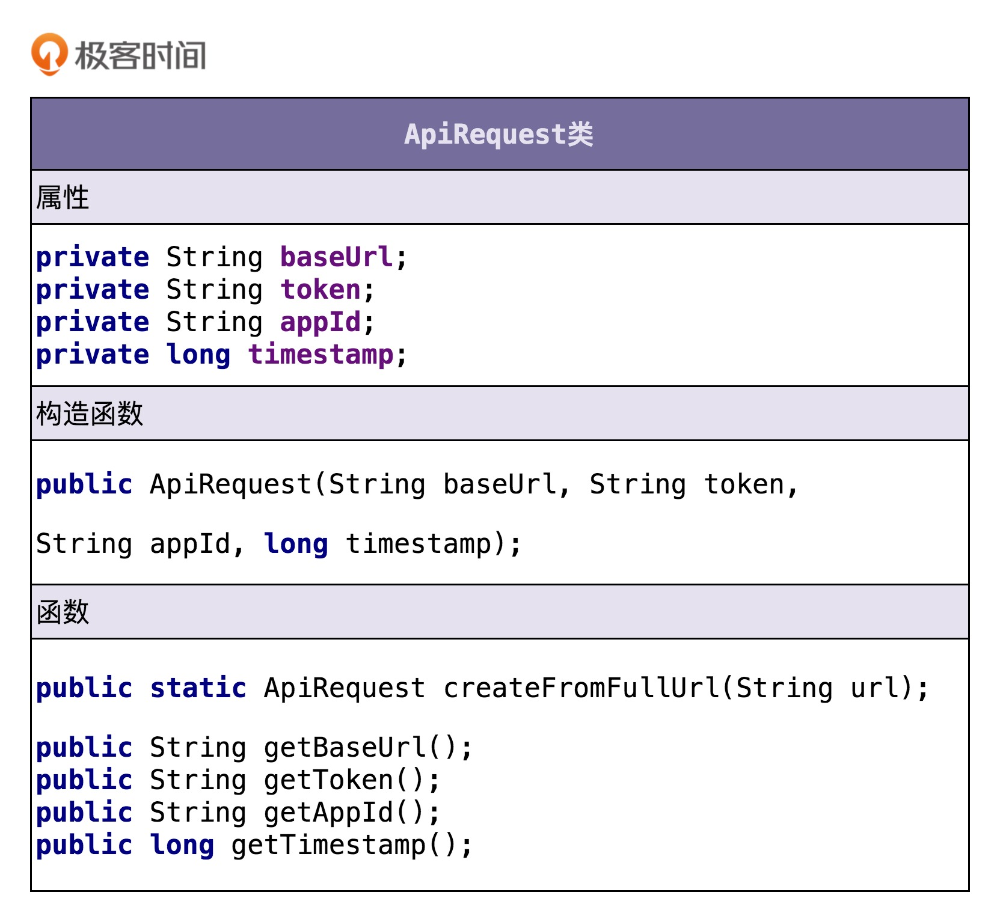

<!DOCTYPE html>
<html lang="zh-cn">
<head>
  <meta charset="utf-8">
  <meta http-equiv="X-UA-Compatible" content="IE=edge,chrome=1">
  <title>设计模式之美笔记一：面向对象理论与实战 - Teoking writes something.</title>
  <meta name="renderer" content="webkit" />
<meta name="viewport" content="width=device-width, initial-scale=1, maximum-scale=1"/>

<meta http-equiv="Cache-Control" content="no-transform" />
<meta http-equiv="Cache-Control" content="no-siteapp" />

<meta name="theme-color" content="#f8f5ec" />
<meta name="msapplication-navbutton-color" content="#f8f5ec">
<meta name="apple-mobile-web-app-capable" content="yes">
<meta name="apple-mobile-web-app-status-bar-style" content="#f8f5ec">


<meta name="author" content="teoking" /><meta name="description" content="面向对象 什么是面向对象？ 什么是面向对象编程？ 面向对象编程是一种编程范式或编程风格。它以类或对象作为组织代码的基本单元，并将封装、抽象、继承、" /><meta name="keywords" content="Tech, Android, iOS" />


<meta name="generator" content="Hugo 0.99.1 with theme even" />


<link rel="canonical" href="https://teoking.github.io/post/dp_oo_theory_and_actions/" />
<link rel="apple-touch-icon" sizes="180x180" href="/apple-touch-icon.png">
<link rel="icon" type="image/png" sizes="32x32" href="/favicon-32x32.png">
<link rel="icon" type="image/png" sizes="16x16" href="/favicon-16x16.png">
<link rel="manifest" href="/manifest.json">
<link rel="mask-icon" href="/safari-pinned-tab.svg" color="#5bbad5">


<link href="/sass/main.min.f92fd13721ddf72129410fd8250e73152cc6f2438082b6c0208dc24ee7c13fc4.css" rel="stylesheet">
<link rel="stylesheet" href="https://cdn.jsdelivr.net/npm/@fancyapps/fancybox@3.1.20/dist/jquery.fancybox.min.css" integrity="sha256-7TyXnr2YU040zfSP+rEcz29ggW4j56/ujTPwjMzyqFY=" crossorigin="anonymous">


<meta property="og:title" content="设计模式之美笔记一：面向对象理论与实战" />
<meta property="og:description" content="面向对象 什么是面向对象？ 什么是面向对象编程？ 面向对象编程是一种编程范式或编程风格。它以类或对象作为组织代码的基本单元，并将封装、抽象、继承、" />
<meta property="og:type" content="article" />
<meta property="og:url" content="https://teoking.github.io/post/dp_oo_theory_and_actions/" /><meta property="article:section" content="post" />
<meta property="article:published_time" content="2021-06-03T21:37:28+08:00" />
<meta property="article:modified_time" content="2021-06-03T21:37:28+08:00" />

<meta itemprop="name" content="设计模式之美笔记一：面向对象理论与实战">
<meta itemprop="description" content="面向对象 什么是面向对象？ 什么是面向对象编程？ 面向对象编程是一种编程范式或编程风格。它以类或对象作为组织代码的基本单元，并将封装、抽象、继承、"><meta itemprop="datePublished" content="2021-06-03T21:37:28+08:00" />
<meta itemprop="dateModified" content="2021-06-03T21:37:28+08:00" />
<meta itemprop="wordCount" content="13436">
<meta itemprop="keywords" content="OOAD,OOP,Theory," /><meta name="twitter:card" content="summary"/>
<meta name="twitter:title" content="设计模式之美笔记一：面向对象理论与实战"/>
<meta name="twitter:description" content="面向对象 什么是面向对象？ 什么是面向对象编程？ 面向对象编程是一种编程范式或编程风格。它以类或对象作为组织代码的基本单元，并将封装、抽象、继承、"/>

<!--[if lte IE 9]>
  <script src="https://cdnjs.cloudflare.com/ajax/libs/classlist/1.1.20170427/classList.min.js"></script>
<![endif]-->

<!--[if lt IE 9]>
  <script src="https://cdn.jsdelivr.net/npm/html5shiv@3.7.3/dist/html5shiv.min.js"></script>
  <script src="https://cdn.jsdelivr.net/npm/respond.js@1.4.2/dest/respond.min.js"></script>
<![endif]-->

</head>
<body>
  <div id="mobile-navbar" class="mobile-navbar">
  <div class="mobile-header-logo">
    <a href="/" class="logo">Teoking</a>
  </div>
  <div class="mobile-navbar-icon">
    <span></span>
    <span></span>
    <span></span>
  </div>
</div>
<nav id="mobile-menu" class="mobile-menu slideout-menu">
  <ul class="mobile-menu-list">
    <a href="/">
        <li class="mobile-menu-item">Home</li>
      </a><a href="/post/">
        <li class="mobile-menu-item">Archives</li>
      </a><a href="/tags/">
        <li class="mobile-menu-item">Tags</li>
      </a><a href="/categories/">
        <li class="mobile-menu-item">Categories</li>
      </a>
  </ul>

  


</nav>

  <div class="container" id="mobile-panel">
    <header id="header" class="header">
        <div class="logo-wrapper">
  <a href="/" class="logo">Teoking</a>
</div>


<nav class="site-navbar">
  <ul id="menu" class="menu">
    <li class="menu-item">
        <a class="menu-item-link" href="/">Home</a>
      </li><li class="menu-item">
        <a class="menu-item-link" href="/post/">Archives</a>
      </li><li class="menu-item">
        <a class="menu-item-link" href="/tags/">Tags</a>
      </li><li class="menu-item">
        <a class="menu-item-link" href="/categories/">Categories</a>
      </li>
  </ul>
</nav>

    </header>

    <main id="main" class="main">
      <div class="content-wrapper">
        <div id="content" class="content">
          <article class="post">
    
    <header class="post-header">
      <h1 class="post-title">设计模式之美笔记一：面向对象理论与实战</h1>

      <div class="post-meta">
        <span class="post-time"> 2021-06-03 </span>
        <div class="post-category">
            <a href="/categories/ooad/"> OOAD </a>
            </div>
        
      </div>
    </header>

    <div class="post-toc" id="post-toc">
  <h2 class="post-toc-title">文章目录</h2>
  <div class="post-toc-content always-active">
    <nav id="TableOfContents">
  <ul>
    <li><a href="#面向对象">面向对象</a>
      <ul>
        <li><a href="#什么是面向对象">什么是面向对象？</a></li>
        <li><a href="#面向对象的四大特性">面向对象的四大特性</a></li>
        <li><a href="#面向对象vs面向过程">面向对象vs面向过程</a></li>
        <li><a href="#三种违反面向对象编程风格的典型代码设计">三种违反面向对象编程风格的典型代码设计</a></li>
        <li><a href="#接口vs抽象类">接口vs抽象类</a></li>
        <li><a href="#为什么基于接口而非实现编程">为什么基于接口而非实现编程？</a></li>
        <li><a href="#为何说要多用组合少用继承如何决定该用组合还是继承">为何说要多用组合少用继承？如何决定该用组合还是继承？</a></li>
      </ul>
    </li>
    <li><a href="#实战">实战</a>
      <ul>
        <li><a href="#实战一充血模型的应用">实战一：充血模型的应用</a>
          <ul>
            <li><a href="#业务开发常用的基于贫血模型的mvc架构违背oop吗">业务开发常用的基于贫血模型的MVC架构违背OOP吗？</a></li>
            <li><a href="#如何利用基于充血模型的ddd开发一个虚拟钱包系统">如何利用基于充血模型的DDD开发一个虚拟钱包系统？</a></li>
          </ul>
        </li>
        <li><a href="#实战二面向对象分析设计和编程在接口鉴权功能中的应用">实战二：面向对象分析、设计和编程在接口鉴权功能中的应用</a>
          <ul>
            <li><a href="#案例介绍及难点">案例介绍及难点</a></li>
            <li><a href="#对案例进行需求分析">对案例进行需求分析</a></li>
            <li><a href="#如何进行面向对象设计">如何进行面向对象设计？</a></li>
            <li><a href="#如何进行面向对象编程">如何进行面向对象编程？</a></li>
            <li><a href="#辩证思考与灵活应用">辩证思考与灵活应用</a></li>
          </ul>
        </li>
      </ul>
    </li>
    <li><a href="#个人总结">个人总结</a></li>
    <li><a href="#reference">Reference</a></li>
  </ul>
</nav>
  </div>
</div>
    <div class="post-content">
      <h1 id="面向对象">面向对象</h1>
<h2 id="什么是面向对象">什么是面向对象？</h2>
<ol>
<li><strong>什么是面向对象编程？</strong></li>
</ol>
<p>面向对象编程是一种编程范式或编程风格。它以类或对象作为组织代码的基本单元，并将封装、抽象、继承、多态四个特性，作为代码设计和实现的基石 。</p>
<ol start="2">
<li><strong>什么是面向对象编程语言？</strong></li>
</ol>
<p>面向对象编程语言是支持类或对象的语法机制，并有现成的语法机制，能方便地实现面向对象编程四大特性（封装、抽象、继承、多态）的编程语言。</p>
<ol start="3">
<li><strong>如何判定一个编程语言是否是面向对象编程语言？</strong></li>
</ol>
<p>如果按照严格的的定义，需要有现成的语法支持类、对象、四大特性才能叫作面向对象编程语言。如果放宽要求的话，只要某种编程语言支持类、对象语法机制，那基本上就可以说这种编程语言是面向对象编程语言了，不一定非得要求具有所有的四大特性。</p>
<ol start="4">
<li><strong>面向对象编程和面向对象编程语言之间有何关系？</strong></li>
</ol>
<p>面向对象编程一般使用面向对象编程语言来进行，但是，不用面向对象编程语言，我们照样可以进行面向对象编程。反过来讲，即便我们使用面向对象编程语言，写出来的代码也不一定是面向对象编程风格的，也有可能是面向过程编程风格的。</p>
<ol start="5">
<li><strong>什么是面向对象分析和面向对象设计？</strong></li>
</ol>
<p>简单点讲，<strong>面向对象分析就是要搞清楚做什么，面向对象设计就是要搞清楚怎么做。两个阶段最终的产出是类的设计，包括程序被拆解为哪些类，每个类有哪些属性方法、类与类之间如何交互等等</strong>。</p>
<h2 id="面向对象的四大特性">面向对象的四大特性</h2>
<ol>
<li><strong>关于封装特性</strong></li>
</ol>
<p><strong>封装也叫作信息隐藏或者数据访问保护</strong>。类通过暴露有限的访问接口，授权外部仅能通过类提供的方式来访问内部信息或者数据。<strong>它需要编程语言提供权限访问控制语法来支持，例如 Java 中的 private、protected、public 关键字</strong>。封装特性存在的意义，一方面是保护数据不被随意修改，提高代码的可维护性；另一方面是仅暴露有限的必要接口，提高类的易用性。</p>
<ol start="2">
<li><strong>关于抽象特性</strong></li>
</ol>
<p>封装主要讲如何隐藏信息、保护数据，那<strong>抽象就是讲如何隐藏方法的具体实现，让使用者只需要关心方法提供了哪些功能，不需要知道这些功能是如何实现的</strong>。抽象可以通过接口类或者抽象类来实现，但也并不需要特殊的语法机制来支持。抽象存在的意义，一方面是提高代码的可扩展性、维护性，修改实现不需要改变定义，减少代码的改动范围；另一方面，它也是处理复杂系统的有效手段，能有效地过滤掉不必要关注的信息。</p>
<p>类的方法是通过编程语言中的“函数”这一语法机制来实现的。<em>通过函数包裹具体的实现逻辑，这本身就是一种抽象</em>。并不需要去研究函数内部的实现逻辑，只需要通过函数的命名、注释或者文档，了解其提供了什么功能，就可以直接使用了。比如，我们在使用 C 语言的 malloc() 函数的时候，并不需要了解它的底层代码是怎么实现的。</p>
<ol start="3">
<li><strong>关于继承特性</strong></li>
</ol>
<p><strong>继承是用来表示类之间的 is-a 关系</strong>，分为两种模式：单继承和多继承。单继承表示一个子类只继承一个父类，多继承表示一个子类可以继承多个父类。<strong>为了实现继承这个特性，编程语言需要提供特殊的语法机制来支持</strong>。<strong>继承主要是用来解决代码复用的问题</strong>。</p>
<ol start="4">
<li><strong>关于多态特性</strong></li>
</ol>
<p><strong>多态是指子类可以替换父类，在实际的代码运行过程中，调用子类的方法实现</strong>。多态这种特性也需要编程语言提供特殊的语法机制来实现，比如继承、接口类、duck-typing。多态可以提高代码的扩展性和复用性，是很多设计模式、设计原则、编程技巧的代码实现基础。</p>
<p><em>多态也是很多设计模式、设计原则、编程技巧的代码实现基础，比如策略模式、基于接口而非实现编程、依赖倒置原则、里式替换原则、利用多态去掉冗长的 if-else 语句等等。</em></p>
<h2 id="面向对象vs面向过程">面向对象vs面向过程</h2>
<ol>
<li><strong>什么是面向过程编程？什么是面向过程编程语言？</strong></li>
</ol>
<p>实际上，面向过程编程和面向过程编程语言并没有严格的官方定义。理解这两个概念最好的方式是跟面向对象编程和面向对象编程语言进行对比。<strong>相较于面向对象编程以类为组织代码的基本单元，面向过程编程则是以过程（或方法）作为组织代码的基本单元</strong>。它最主要的特点就是数据和方法相分离。相较于面向对象编程语言，面向过程编程语言最大的特点就是不支持丰富的面向对象编程特性，比如继承、多态、封装。</p>
<ol start="2">
<li><strong>面向对象编程相比面向过程编程有哪些优势？</strong></li>
</ol>
<p>面向对象编程相比起面向过程编程的优势主要有三个。</p>
<ul>
<li>对于大规模复杂程序的开发，程序的处理流程并非单一的一条主线，而是错综复杂的网状结构。面向对象编程比起面向过程编程，更能应对这种复杂类型的程序开发。</li>
<li>面向对象编程相比面向过程编程，具有更加丰富的特性（封装、抽象、继承、多态）。利用这些特性编写出来的代码，更加易扩展、易复用、易维护。</li>
<li>从编程语言跟机器打交道的方式的演进规律中，我们可以总结出：面向对象编程语言比起面向过程编程语言，更加人性化、更加高级、更加智能。</li>
</ul>
<hr>
<p>**课堂讨论：**在文章中我讲到，面向对象编程比面向过程编程，更加容易应对大规模复杂程序的开发。但像 Unix、Linux 这些复杂的系统，也都是基于 C 语言这种面向过程的编程语言开发的，你怎么看待这个现象？这跟我之前的讲解相矛盾吗？</p>
<p><strong>一条优秀的回答</strong>：<em>使用任何一个编程语言编写的程序，最终执行上都要落实到CPU一条一条指令的执行（无论通过虚拟机解释执行，还是直接编译为机器码），CPU看不到是使用何种语言编写的程序。对于所有编程语言最终目的是两种：提高硬件的运行效率和提高程序员的开发效率。然而这两种很难兼得。</em>
<em>C语言在效率方面几乎做到了极致，它更适合挖掘硬件的价值，如：C语言用数组char a[8]，经过编译以后变成了（基地址＋偏移量）的方式。对于CPU来说，没有运算比加法更快，它的执行效率的算法复杂度是O(1)的。从执行效率这个方面看，开发操作系统和贴近硬件的底层程序，C语言是极好的选择。</em>
<em>C语言带来的问题是内存越界、野指针、内存泄露等。它只关心程序飞的高不高，不关心程序猿飞的累不累。为了解脱程序员，提高开发效率，设计了OOP等更“智能”的编程语言，但是开发容易毕竟来源于对底层的一层一层又一层的包装。完成一个特定操作有了更多的中间环节, 占用了更大的内存空间, 占用了更多的CPU运算。从这个角度看，OOP这种高级语言的流行是因为硬件越来越便宜了。我们可以想象如果大众消费级的主控芯片仍然是单核600MHz为主流，运行Android系统点击一个界面需要2秒才能响应，那我们现在用的大部分手机程序绝对不是使用JAVA开发的，Android操作系统也不可能建立起这么大的生态。</em></p>
<h2 id="三种违反面向对象编程风格的典型代码设计">三种违反面向对象编程风格的典型代码设计</h2>
<ol>
<li><strong>滥用 getter、setter 方法</strong></li>
</ol>
<p>在设计实现类的时候，除非真的需要，否则尽量不要给属性定义 setter 方法。除此之外，尽管 getter 方法相对 setter 方法要安全些，但是如果返回的是集合容器，那也要防范集合内部数据被修改的风险。</p>
<ol start="2">
<li><strong><code>Constants</code>类、<code>Utils</code> 类的设计问题</strong></li>
</ol>
<p>对于这两种类的设计，我们尽量能做到职责单一，定义一些细化的小类，比如<code>RedisConstants</code>、<code>FileUtils</code>，而不是定义一个大而全的 <code>Constants</code>类、<code>Utils</code>类。除此之外，如果能将这些类中的属性和方法，划分归并到其他业务类中，那是最好不过的了，能极大地提高类的内聚性和代码的可复用性。</p>
<p><strong>实际案例：</strong></p>
<p>在我们的项目代码中，有一个<code>Utils</code>的类，代码超过3500行。其内部提供的方法涵盖计算bitmap采样比、bitmap创建、布局创建、文件类型检查等。按照本文的思路去重构，可以将Utils分拆为3个：<code>BitmapUtils</code>, <code>LayoutUtils</code>, <code>FileUtils</code>。</p>
<ol start="3">
<li><strong>基于贫血模型的开发模式</strong></li>
</ol>
<p>关于这一部分，我们只讲了为什么这种开发模式是彻彻底底的面向过程编程风格的。这是因为数据和操作是分开定义在 VO/BO/Entity 和 Controler/Service/Repository 中的。今天，你只需要掌握这一点就可以了。为什么这种开发模式如此流行？如何规避面向过程编程的弊端？有没有更好的可替代的开发模式？相关的更多问题，我们在面向对象实战篇中会一一讲解。</p>
<p>贫血模型（Anemic Domain Model）：只包含数据，不包含业务逻辑的类。这种模型的类将数据和对应操作分离，通常位于不同的类中。</p>
<p>充血模型（Rich Domain Model）：数据和对应的业务逻辑被封装到同一个类中。</p>
<h2 id="接口vs抽象类">接口vs抽象类</h2>
<ol>
<li><strong>抽象类和接口的语法特性</strong></li>
</ol>
<p>抽象类不允许被实例化，只能被继承。它可以包含属性和方法。方法既可以包含代码实现，也可以不包含代码实现。不包含代码实现的方法叫作抽象方法。子类继承抽象类，必须实现抽象类中的所有抽象方法。</p>
<p>接口不能包含属性，只能声明方法，方法不能包含代码实现。类实现接口的时候，必须实现接口中声明的所有方法。</p>
<ol start="2">
<li><strong>抽象类和接口存在的意义</strong></li>
</ol>
<p>抽象类是对成员变量和方法的抽象，是一种 is-a 关系，是为了<strong>解决代码复用问题</strong>。</p>
<p>接口仅仅是对方法的抽象，是一种 has-a 关系，表示具有某一组行为特性，是为了<strong>解决解耦问题，隔离接口和具体的实现，提高代码的扩展性</strong>。</p>
<ol start="3">
<li><strong>抽象类和接口的应用场景区别</strong></li>
</ol>
<p>什么时候该用抽象类？什么时候该用接口？实际上，判断的标准很简单。如果要表示一种 is-a 的关系，并且是为了解决代码复用问题，我们就用抽象类；如果要表示一种 has-a 关系，并且是为了解决抽象而非代码复用问题，那我们就用接口。</p>
<h2 id="为什么基于接口而非实现编程">为什么基于接口而非实现编程？</h2>
<ol>
<li>&ldquo;基于接口而非实现编程”，这条原则的另一个表述方式，是**“基于抽象而非实现编程”**。后者的表述方式其实更能体现这条原则的设计初衷。我们在做软件开发的时候，一定要有抽象意识、封装意识、接口意识。越抽象、越顶层、越脱离具体某一实现的设计，越能提高代码的灵活性、扩展性、可维护性。</li>
<li>我们在定义接口的时候，一方面，<strong>命名要足够通用</strong>，不能包含跟具体实现相关的字眼；另一方面，<strong>与特定实现有关的方法不要定义在接口中</strong>。</li>
<li><strong>“基于接口而非实现编程”这条原则，不仅仅可以指导非常细节的编程开发，还能指导更加上层的架构设计、系统设计等</strong>。比如，服务端与客户端之间的“接口”设计、类库的“接口”设计。</li>
</ol>
<p>应用这条原则，可以将<strong>接口和实现相分离，封装不稳定的实现，暴露稳定的接口</strong>。上游系统面向接口而非实现编程，不依赖不稳定的实现细节，这样当实现发生变化的时候，上游系统的代码基本上不需要做改动，以此来降低耦合性，提高扩展性。</p>
<p><strong>实际案例：</strong></p>
<p>以Android SDK为例，随着系统的更新，SDK的API实际上是很稳定的：新增的API会标记API Level检查，废弃的API会标记废弃，API保持不变，但API的实现可能在下一个版本就会变化。对于废弃的功能，则增加了新的API及实现。同样的，iOS SDK API也是非常稳定。从这两个平台可以看出，成功的SDK一定是“暴露稳定的接口，封装不稳定的实现”。</p>
<h2 id="为何说要多用组合少用继承如何决定该用组合还是继承">为何说要多用组合少用继承？如何决定该用组合还是继承？</h2>
<ol>
<li><strong>为什么不推荐使用继承？</strong></li>
</ol>
<p>继承是面向对象的四大特性之一，用来表示类之间的 is-a 关系，可以解决代码复用的问题。虽然继承有诸多作用，但继承层次过深、过复杂，也会影响到代码的可维护性。在这种情况下，我们应该尽量少用，甚至不用继承。</p>
<p><em>“复用”是好事，但当继承层次多，代码复杂时，这种复用就会带来更多负面作用：暴露太多信息给子类。当调用者使用子类，很可能需要一级一级向上追代码，造成维护负担；暴露太多细节，则一定会导致不稳定因素的扩散，很容易造成牵一发而动全身。</em></p>
<ol start="2">
<li><strong>组合相比继承有哪些优势？</strong></li>
</ol>
<p>继承主要有三个作用：表示 is-a 关系，支持多态特性，代码复用。而这三个作用都可以通过组合、接口、委托三个技术手段来达成。除此之外，利用组合还能解决层次过深、过复杂的继承关系影响代码可维护性的问题。</p>
<p><em>像Kotlin还内建了委托，可以通过by关键字快速实现委托模式。</em></p>
<ol start="3">
<li><strong>如何判断该用组合还是继承？</strong></li>
</ol>
<p>尽管我们鼓励多用组合少用继承，但组合也并不是完美的，继承也并非一无是处。在实际的项目开发中，我们还是要根据具体的情况，来选择该用继承还是组合。如果<strong>类之间的继承结构稳定，层次比较浅，关系不复杂，我们就可以大胆地使用继承。反之，我们就尽量使用组合来替代继承</strong>。除此之外，还有一些设计模式、特殊的应用场景，会固定使用继承或者组合。</p>
<p>装饰者模式（decorator pattern）、策略模式（strategy pattern）、组合模式（composite pattern）等都使用了组合关系，而模板模式（template pattern）使用了继承关系。</p>
<p><em>当我们要重写一个类的某个方法、添加新属性或方法时，就必须使用继承来实现。但在Kotlin中，可以用扩展函数这些需求，并不需要使用继承。在Swift中可以通过Extensions来达到同样目的</em></p>
<h1 id="实战">实战</h1>
<h2 id="实战一充血模型的应用">实战一：充血模型的应用</h2>
<h3 id="业务开发常用的基于贫血模型的mvc架构违背oop吗">业务开发常用的基于贫血模型的MVC架构违背OOP吗？</h3>
<p>我们平时做 Web 项目的业务开发，大部分都是基于贫血模型的 MVC 三层架构，在专栏中我把它称为传统的开发模式。之所以称之为“传统”，是相对于新兴的基于充血模型的 DDD 开发模式来说的。基于贫血模型的传统开发模式，是典型的面向过程的编程风格。相反，基于充血模型的 DDD 开发模式，是典型的面向对象的编程风格。</p>
<p>不过，DDD 也并非银弹。对于业务不复杂的系统开发来说，基于贫血模型的传统开发模式简单够用，基于充血模型的 DDD 开发模式有点大材小用，无法发挥作用。相反，对于业务复杂的系统开发来说，基于充血模型的 DDD 开发模式，因为前期需要在设计上投入更多时间和精力，来提高代码的复用性和可维护性，所以相比基于贫血模型的开发模式，更加有优势。</p>
<p><em>MVC的确是违背了OOP中的封装原则，是一种面向过程的编程风格。但MVC又是极度流行的，十年前，我的一份工作中参与的项目就是使用SSH（Struts + Spring + Hibernate）这种MVC框架实现的。每天的工作就是实现CRUD，一层一层封装SQL查询结果，最终展示到界面（JSP + Servlet + Html）。</em></p>
<p><em>除了Web项目，在移动端，早期的项目就是MVC的，后来又流行MVP，到现在随着框架的支持，MVVM也开始流行了起来。</em></p>
<h3 id="如何利用基于充血模型的ddd开发一个虚拟钱包系统">如何利用基于充血模型的DDD开发一个虚拟钱包系统？</h3>
<p><a href="https://time.geekbang.org/column/article/169631">原文</a>较长，这里不做搬运，只重点关注下应用充血模式后，下面两个值得关注的问题。</p>
<p>对于虚拟钱包系统的设计与两种开发模式的代码实现，我想你应该有个比较清晰的了解了。不过，我觉得还有两个问题值得讨论一下。</p>
<p><strong>第一个要讨论的问题是</strong>：在基于充血模型的 DDD 开发模式中，将业务逻辑移动到 Domain 中，Service 类变得很薄，但在我们的代码设计与实现中，并没有完全将 Service 类去掉，这是为什么？或者说，Service 类在这种情况下担当的职责是什么？哪些功能逻辑会放到 Service 类中？</p>
<p>区别于 Domain 的职责，Service 类主要有下面这样几个职责。</p>
<p>1.Service 类负责与 Repository 交流。在我的设计与代码实现中，VirtualWalletService 类负责与 Repository 层打交道，调用 Respository 类的方法，获取数据库中的数据，转化成领域模型 VirtualWallet，然后由领域模型 VirtualWallet 来完成业务逻辑，最后调用 Repository 类的方法，将数据存回数据库。这里我再稍微解释一下，之所以让 VirtualWalletService 类与 Repository 打交道，而不是让领域模型 VirtualWallet 与 Repository 打交道，那是因为我们想保持领域模型的独立性，不与任何其他层的代码（Repository 层的代码）或开发框架（比如 Spring、MyBatis）耦合在一起，将流程性的代码逻辑（比如从 DB 中取数据、映射数据）与领域模型的业务逻辑解耦，让领域模型更加可复用。</p>
<p>2.Service 类负责跨领域模型的业务聚合功能。VirtualWalletService 类中的 transfer() 转账函数会涉及两个钱包的操作，因此这部分业务逻辑无法放到 VirtualWallet 类中，所以，我们暂且把转账业务放到 VirtualWalletService 类中了。当然，虽然功能演进，使得转账业务变得复杂起来之后，我们也可以将转账业务抽取出来，设计成一个独立的领域模型。</p>
<p>3.Service 类负责一些非功能性及与三方系统交互的工作。比如幂等、事务、发邮件、发消息、记录日志、调用其他系统的 RPC 接口等，都可以放到 Service 类中。</p>
<p><em>在我熟悉的移动端领域，从早期的臃肿的Activity（这时的Activity可以理解为C层或Service层），到随着MVP，MVVM的使用，Activity就是不断在变薄的（如在MVVM中更多是业务接合和view-data绑定）。不知不觉中，业务代码实际上都被放进了Business Object中去了（ViewModel/Model）。当理解了充血模式后，我对Model层的理解从“Entity”变成了“Entity + Business”。</em></p>
<p><strong>第二个要讨论问题是</strong>：在基于充血模型的 DDD 开发模式中，尽管 Service 层被改造成了充血模型，但是 Controller 层和 Repository 层还是贫血模型，是否有必要也进行充血领域建模呢？</p>
<p>答案是没有必要。Controller 层主要负责接口的暴露，Repository 层主要负责与数据库打交道，这两层包含的业务逻辑并不多，前面我们也提到了，如果业务逻辑比较简单，就没必要做充血建模，即便设计成充血模型，类也非常单薄，看起来也很奇怪。</p>
<p>尽管这样的设计是一种面向过程的编程风格，但我们只要控制好面向过程编程风格的副作用，照样可以开发出优秀的软件。那这里的副作用怎么控制呢？</p>
<p>就拿 Repository 的 Entity 来说，即便它被设计成贫血模型，违反面向对象编程的封装特性，有被任意代码修改数据的风险，但 Entity 的生命周期是有限的。一般来讲，我们把它传递到 Service 层之后，就会转化成 BO 或者 Domain 来继续后面的业务逻辑。Entity 的生命周期到此就结束了，所以也并不会被到处任意修改。</p>
<p>我们再来说说 Controller 层的 VO。实际上 VO 是一种 DTO（Data Transfer Object，数据传输对象）。它主要是作为接口的数据传输承载体，将数据发送给其他系统。从功能上来讲，它理应不包含业务逻辑、只包含数据。所以，我们将它设计成贫血模型也是比较合理的。</p>
<p><em>分而治之。对于简单逻辑，应使用贫血模型来避免引入额外的复杂度；但对于需要考虑可维护性、可读性、可扩展性等设计质量标准的需求来说，充血模型是优先选择的。我自己的一个切身体会是，在维护的一个编辑器项目中，早期的设计者就是使用了充血模型，虽然初看起来类很多，但当理解了这些类的作用时，又突然会感觉整套代码很清晰；当去实现需求时，由于这种设计的可扩展性不错，新需求实现基本没有出现过delay。</em></p>
<h2 id="实战二面向对象分析设计和编程在接口鉴权功能中的应用">实战二：面向对象分析、设计和编程在接口鉴权功能中的应用</h2>
<p>通过这个实战，我们可以学习到：接手一个需求后，如何使用<strong>面向对象分析（OOA）搞清楚需求</strong>，再通过面向对象设计（OOD）和面向对象编程（OOP）完成代码设计与实现。</p>
<h3 id="案例介绍及难点">案例介绍及难点</h3>
<p>假设，你正在参与开发一个微服务。微服务通过 HTTP 协议暴露接口给其他系统调用，说直白点就是，其他系统通过 URL 来调用微服务的接口。有一天leader给你这样一个需求：“为了保证接口调用的安全性，我们希望设计实现一个接口调用鉴权功能，只有经过认证之后的系统才能调用我们的接口，没有认证过的系统调用我们的接口会被拒绝。</p>
<p>通常接到的“一句话需求”时，内心都是懵逼的，一时间感觉无从下手。有这种感觉的原因有两点：</p>
<ol>
<li>
<p><strong>需求不明确</strong></p>
<p>leader 给到的需求过于模糊、笼统，不够具体、细化，离落地到设计、编码还有一定的距离。而人的大脑不擅长思考这种过于抽象的问题。这也是真实的软件开发区别于应试教育的地方。应试教育中的考试题目，一般都是一个非常具体的问题，我们去解答就好了。而真实的软件开发中，需求几乎都不是很明确。</p>
<p>我们需要通过沟通、挖掘、分析、假设、梳理，搞清楚具体的需求有哪些，哪些是现在要做的，哪些是未来可能要做的，哪些是不用考虑做的。</p>
</li>
<li>
<p><strong>缺少锻炼</strong></p>
<p>相比单纯的业务 CRUD 开发，鉴权这个开发任务，要更有难度。鉴权作为一个跟具体业务无关的功能，我们完全可以把它开发成一个独立的框架，集成到很多业务系统中。而作为被很多系统复用的通用框架，比起普通的业务代码，我们对框架的代码质量要求要更高。</p>
<p>开发这样通用的框架，对工程师的需求分析能力、设计能力、编码能力，甚至逻辑思维能力的要求，都是比较高的。如果你平时做的都是简单的 CRUD 业务开发，那这方面的锻炼肯定不会很多，所以，一旦遇到这种开发需求，很容易因为缺少锻炼，脑子放空，不知道从何入手，完全没有思路。</p>
</li>
</ol>
<h3 id="对案例进行需求分析">对案例进行需求分析</h3>
<p>尽管针对框架、组件、类库等非业务系统的开发，我们一定要有组件化意识、框架意识、抽象意识，开发出来的东西要足够通用，不能局限于单一的某个业务需求，但这并不代表我们就可以脱离具体的应用场景，闷头拍脑袋做需求分析。多跟业务团队聊聊天，甚至自己去参与几个业务系统的开发，只有这样，我们才能真正知道业务系统的痛点，才能分析出最有价值的需求。<strong>所以，即便做“通用“框架，也是要做结合业务的”通用“</strong>。</p>
<p>需求分析也可以像算法一样，进行迭代。</p>
<ol>
<li>
<p><strong>第一轮基础分析</strong></p>
<p>通过用户名加密码来做认证。我们给每个允许访问我们服务的调用方，派发一个应用名（或者叫应用 ID、AppID）和一个对应的密码（或者叫秘钥）。调用方每次进行接口请求的时候，都携带自己的 AppID 和密码。微服务在接收到接口调用请求之后，会解析出 AppID 和密码，跟存储在微服务端的 AppID 和密码进行比对。如果一致，说明认证成功，则允许接口调用请求；否则，就拒绝接口调用请求。</p>
<p><em>这一轮只是为了快速得到一个最简单方案</em></p>
</li>
<li>
<p><strong>第二轮分析优化</strong></p>
<p>第一轮的方案存在一个问题就是传输了密码（不论明文或密文），都容易导致<a href="https://zh.wikipedia.org/wiki/%E9%87%8D%E6%94%BE%E6%94%BB%E5%87%BB">重放攻击</a>。为解决这个问题，可以<strong>借助OAuth的验证思路来解决</strong>。调用方将请求接口的 URL 跟 AppID、密码拼接在一起，然后进行加密，生成一个 token。调用方在进行接口请求的的时候，将这个 token 及 AppID，随 URL 一块传递给微服务端。微服务端接收到这些数据之后，根据 AppID 从数据库中取出对应的密码，并通过同样的 token 生成算法，生成另外一个 token。用这个新生成的 token 跟调用方传递过来的 token 对比。如果一致，则允许接口调用请求；否则，就拒绝接口调用请求。</p>
<p></p>
<p><em>这轮优化可以看出，借鉴应用业界，站在巨人的肩膀上，更能做好设计</em></p>
</li>
<li>
<p><strong>第三轮分析优化</strong></p>
<p>不过，这样的设计仍然存在重放攻击的风险，还是不够安全。每个 URL 拼接上 AppID、密码生成的 token 都是固定的。未认证系统截获 URL、token 和 AppID 之后，还是可以通过重放攻击的方式，伪装成认证系统，调用这个 URL 对应的接口。
为了解决这个问题，我们可以进一步<strong>优化 token 生成算法，引入一个随机变量，让每次接口请求生成的 token 都不一样</strong>。我们可以选择时间戳作为随机变量。原来的 token 是对 URL、AppID、密码三者进行加密生成的，现在我们将 URL、AppID、密码、时间戳四者进行加密来生成 token。调用方在进行接口请求的时候，将 token、AppID、时间戳，随 URL 一并传递给微服务端。</p>
<p>微服务端在收到这些数据之后，会验证当前时间戳跟传递过来的时间戳，是否在一定的时间窗口内（比如一分钟）。如果超过一分钟，则判定 token 过期，拒绝接口请求。如果没有超过一分钟，则说明 token 没有过期，就再通过同样的 token 生成算法，在服务端生成新的 token，与调用方传递过来的 token 比对，看是否一致。如果一致，则允许接口调用请求；否则，就拒绝接口调用请求。</p>
<p></p>
</li>
<li>
<p><strong>第四轮分析优化</strong></p>
<p>不过，你可能会说，这样还是不够安全啊。未认证系统还是可以在这一分钟的 token 失效窗口内，通过截获请求、重放请求，来调用我们的接口啊！</p>
<p>你说得没错。不过，<strong>攻与防之间，本来就没有绝对的安全。我们能做的就是，尽量提高攻击的成本</strong>。这个方案虽然还有漏洞，但是实现起来足够简单，而且不会过度影响接口本身的性能（比如响应时间）。所以，<strong>权衡安全性、开发成本、对系统性能的影响，这个方案算是比较折中、比较合理的了</strong>。</p>
<p>实际上，还有一个细节我们没有考虑到，那就是，如何在微服务端存储每个授权调用方的 AppID 和密码。当然，这个问题并不难。最容易想到的方案就是存储到数据库里，比如 MySQL。不过，开发像鉴权这样的非业务功能，最好不要与具体的第三方系统有过度的耦合。</p>
<p><strong>针对 AppID 和密码的存储，我们最好能灵活地支持各种不同的存储方式</strong>，比如 ZooKeeper、本地配置文件、自研配置中心、MySQL、Redis 等。我们不一定针对每种存储方式都去做代码实现，但起码要留有扩展点，保证系统有足够的灵活性和扩展性，能够在我们切换存储方式的时候，尽可能地减少代码的改动。</p>
<p><em>这就是DDD的观点：区分核心域与支撑域。存储对于当前需求来说，算是支撑域。为了鉴权服务更通用，就不应在这些域设限。</em></p>
</li>
<li>
<p><strong>最终确定需求</strong></p>
</li>
</ol>
<ul>
<li>调用方进行接口请求的时候，将 URL、AppID、密码、时间戳拼接在一起，通过加密算法生成 token，并且将 token、AppID、时间戳拼接在 URL 中，一并发送到微服务端。</li>
<li>微服务端在接收到调用方的接口请求之后，从请求中拆解出 token、AppID、时间戳。</li>
<li>微服务端首先检查传递过来的时间戳跟当前时间，是否在 token 失效时间窗口内。如果已经超过失效时间，那就算接口调用鉴权失败，拒绝接口调用请求。</li>
<li>如果 token 验证没有过期失效，微服务端再从自己的存储中，取出 AppID 对应的密码，通过同样的 token 生成算法，生成另外一个 token，与调用方传递过来的 token 进行匹配；如果一致，则鉴权成功，允许接口调用，否则就拒绝接口调用。</li>
</ul>
<p>这就是我们需求分析的整个思考过程，<strong>从最粗糙、最模糊的需求开始，通过“提出问题 - 解决问题”的方式，循序渐进地进行优化，最后得到一个足够清晰、可落地的需求描述</strong>。</p>
<p><em>珍惜工作中的非CRUD需求，这类需求没有框架给你规定好的代码设计，可以自己去做很多事情。</em></p>
<h3 id="如何进行面向对象设计">如何进行面向对象设计？</h3>
<p>面向对象分析的产出是详细的需求描述，那面向对象设计的产出就是类。在面向对象设计环节，我们将需求描述转化为具体的类的设计。主要包含如下几部分：</p>
<ul>
<li>
<p>划分职责进而识别出有哪些类；</p>
</li>
<li>
<p>定义类及其属性和方法；</p>
</li>
<li>
<p>定义类与类之间的交互关系；</p>
</li>
<li>
<p>将类组装起来并提供执行入口。</p>
</li>
</ul>
<h4 id="1-划分职责进而识别出有哪些类">1. 划分职责进而识别出有哪些类</h4>
<p>大多数讲面向对象的书籍中，还会讲到另外一种识别类的方法，那就是把需求描述中的名词罗列出来，作为可能的候选类，然后再进行筛选。对于没有经验的初学者来说，这个方法比较简单、明确，可以直接照着做。</p>
<p>另一种方法是：<strong>根据需求描述，把其中涉及的功能点，一个一个罗列出来，然后再去看哪些功能点职责相近，操作同样的属性，是否应该归为同一个类</strong>。</p>
<p>根据上述方法，我们对需求进行逐句拆解（注意：拆解出来的每个功能点要尽可能的小，要符合”单一职责“），得到功能点列表：</p>
<ol>
<li>把 URL、AppID、密码、时间戳拼接为一个字符串；</li>
<li>对字符串通过加密算法加密生成 token；</li>
<li>将 token、AppID、时间戳拼接到 URL 中，形成新的 URL；</li>
<li>解析 URL，得到 token、AppID、时间戳等信息；</li>
<li>从存储中取出 AppID 和对应的密码；</li>
<li>根据时间戳判断 token 是否过期失效；</li>
<li>验证两个 token 是否匹配；</li>
</ol>
<p>从上面的功能列表中，我们发现，1、2、6、7 都是跟 token 有关，负责 token 的生成、验证；3、4 都是在处理 URL，负责 URL 的拼接、解析；5 是操作 AppID 和密码，负责从存储中读取 AppID 和密码。所以，我们可以粗略地得到三个核心的类：AuthToken、Url、CredentialStorage。AuthToken 负责实现 1、2、6、7 这四个操作；Url 负责 3、4 两个操作；CredentialStorage 负责 5 这个操作。（<em>这个过程可以看作是根据罗列功能点进行抽象、设计</em>）</p>
<p><em>此外，本文中的接口鉴权不是一个很复杂的例子，所以通过上述方法基本上可以得到主要的类设计；但是如果需求复杂，设计的功能点特别多，这时最好先进行模块拆分，再针对各模块进行功能点的抽象设计。</em></p>
<h4 id="2-定义类及其属性和方法">2. 定义类及其属性和方法</h4>
<p><strong>AuthToken 类相关的功能点有四个：</strong></p>
<ul>
<li>把 URL、AppID、密码、时间戳拼接为一个字符串；</li>
<li>对字符串通过加密算法加密生成 token；</li>
<li>根据时间戳判断 token 是否过期失效；</li>
<li>验证两个 token 是否匹配。</li>
</ul>
<p>对于方法的识别，很多面向对象相关的书籍，一般都是这么讲的，<strong>识别出需求描述中的动词，作为候选的方法，再进一步过滤筛选。类比一下方法的识别，我们可以把功能点中涉及的名词，作为候选属性，然后同样进行过滤筛选。</strong></p>

<p>从上面的类图中，我们可以发现这样三个小细节。</p>
<ul>
<li>第一个细节：并不是所有出现的名词都被定义为类的属性，比如 URL、AppID、密码、时间戳这几个名词，我们把它作为了方法的参数。</li>
<li>第二个细节：我们还需要挖掘一些没有出现在功能点描述中属性，比如 createTime，expireTimeInterval，它们用在 isExpired() 函数中，用来判定 token 是否过期。</li>
<li>第三个细节：我们还给 AuthToken 类添加了一个功能点描述中没有提到的方法 getToken()。</li>
</ul>
<p>第一个细节告诉我们，从业务模型上来说，不应该属于这个类的属性和方法，不应该被放到这个类里。比如 URL、AppID 这些信息，从业务模型上来说，不应该属于 AuthToken，所以我们不应该放到这个类中。</p>
<p>第二、第三个细节告诉我们，在设计类具有哪些属性和方法的时候，不能单纯地依赖当下的需求，还要分析这个类从业务模型上来讲，理应具有哪些属性和方法。这样可以一方面保证类定义的完整性，另一方面不仅为当下的需求还为未来的需求做些准备。</p>
<p><strong>Url 类相关的功能点有两个：</strong></p>
<ul>
<li>
<p>将 token、AppID、时间戳拼接到 URL 中，形成新的 URL；</p>
</li>
<li>
<p>解析 URL，得到 token、AppID、时间戳等信息。</p>
</li>
</ul>
<p>虽然需求描述中，我们都是以 URL 来代指接口请求，但是，接口请求并不一定是以 URL 的形式来表达，还有可能是 Dubbo、RPC 等其他形式。为了让这个类更加通用，命名更加贴切，我们接下来把它命名为 ApiRequest。下面是我根据功能点描述设计的 ApiRequest 类。</p>

<p><strong>CredentialStorage 类相关的功能点有一个：</strong></p>
<ul>
<li>从存储中取出 AppID 和对应的密码。</li>
</ul>
<p>CredentialStorage 类非常简单，类图如下所示。<strong>为了做到抽象封装具体的存储方式，我们将 CredentialStorage 设计成了接口，基于接口而非具体的实现编程</strong>。</p>
<p></p>
<h4 id="3-定义类与类之间的交互关系">3. 定义类与类之间的交互关系</h4>
<p>简化后的UML类关系：</p>
<ul>
<li><strong>泛化</strong>（Generalization）可以简单理解为继承关系</li>
<li><strong>实现</strong>（Realization）一般是指接口和实现类之间的关系</li>
<li><strong>组合</strong>（Composition）只要 B 类对象是 A 类对象的成员变量，那我们就称，A 类跟 B 类是组合关系</li>
<li><strong>依赖</strong>（Dependency）不管是 B 类对象是 A 类对象的成员变量，还是 A 类的方法使用 B 类对象作为参数或者返回值、局部变量，只要 B 类对象和 A 类对象有任何使用关系，我们都称它们有依赖关系。</li>
</ul>
<p><em>UML规定了六种类关系，作者觉得太复杂，简化到了上述四种。</em></p>
<h4 id="4-将类组装起来并提供执行入口">4. 将类组装起来并提供执行入口</h4>
<p>类定义好了，类之间必要的交互关系也设计好了，接下来我们要将所有的类组装在一起，提供一个执行入口。这个入口可能是一个 main() 函数，也可能是一组给外部用的 API 接口。通过这个入口，我们能触发整个代码跑起来。</p>
<p><strong>接口鉴权并不是一个独立运行的系统，而是一个集成在系统上运行的组件，所以，我们封装所有的实现细节，设计了一个最顶层的 ApiAuthenticator 接口类，暴露一组给外部调用者使用的 API 接口，作为触发执行鉴权逻辑的入口</strong>。具体的类的设计如下所示：</p>
<p></p>
<h3 id="如何进行面向对象编程">如何进行面向对象编程？</h3>
<p>面向对象设计完成之后，我们已经定义清晰了类、属性、方法、类之间的交互，并且将所有的类组装起来，提供了统一的执行入口。接下来，面向对象编程的工作，就是将这些设计思路翻译成代码实现。有了前面的类图，这部分工作相对来说就比较简单了。所以，这里我只给出比较复杂的 ApiAuthenticator 的实现。</p>
<div class="highlight"><div class="chroma">
<table class="lntable"><tr><td class="lntd">
<pre tabindex="0" class="chroma"><code><span class="lnt"> 1
</span><span class="lnt"> 2
</span><span class="lnt"> 3
</span><span class="lnt"> 4
</span><span class="lnt"> 5
</span><span class="lnt"> 6
</span><span class="lnt"> 7
</span><span class="lnt"> 8
</span><span class="lnt"> 9
</span><span class="lnt">10
</span><span class="lnt">11
</span><span class="lnt">12
</span><span class="lnt">13
</span><span class="lnt">14
</span><span class="lnt">15
</span><span class="lnt">16
</span><span class="lnt">17
</span><span class="lnt">18
</span><span class="lnt">19
</span><span class="lnt">20
</span><span class="lnt">21
</span><span class="lnt">22
</span><span class="lnt">23
</span><span class="lnt">24
</span><span class="lnt">25
</span><span class="lnt">26
</span><span class="lnt">27
</span><span class="lnt">28
</span><span class="lnt">29
</span><span class="lnt">30
</span><span class="lnt">31
</span><span class="lnt">32
</span><span class="lnt">33
</span><span class="lnt">34
</span><span class="lnt">35
</span><span class="lnt">36
</span><span class="lnt">37
</span><span class="lnt">38
</span><span class="lnt">39
</span><span class="lnt">40
</span><span class="lnt">41
</span><span class="lnt">42
</span></code></pre></td>
<td class="lntd">
<pre tabindex="0" class="chroma"><code class="language-java" data-lang="java"><span class="line"><span class="cl">
</span></span><span class="line"><span class="cl"><span class="kd">public</span> <span class="kd">interface</span> <span class="nc">ApiAuthenticator</span> <span class="o">{</span>
</span></span><span class="line"><span class="cl">  <span class="kt">void</span> <span class="nf">auth</span><span class="o">(</span><span class="n">String</span> <span class="n">url</span><span class="o">);</span>
</span></span><span class="line"><span class="cl">  <span class="kt">void</span> <span class="nf">auth</span><span class="o">(</span><span class="n">ApiRequest</span> <span class="n">apiRequest</span><span class="o">);</span>
</span></span><span class="line"><span class="cl"><span class="o">}</span>
</span></span><span class="line"><span class="cl">
</span></span><span class="line"><span class="cl"><span class="kd">public</span> <span class="kd">class</span> <span class="nc">DefaultApiAuthenticatorImpl</span> <span class="kd">implements</span> <span class="n">ApiAuthenticator</span> <span class="o">{</span>
</span></span><span class="line"><span class="cl">  <span class="kd">private</span> <span class="n">CredentialStorage</span> <span class="n">credentialStorage</span><span class="o">;</span>
</span></span><span class="line"><span class="cl">  
</span></span><span class="line"><span class="cl">  <span class="kd">public</span> <span class="nf">DefaultApiAuthenticatorImpl</span><span class="o">()</span> <span class="o">{</span>
</span></span><span class="line"><span class="cl">    <span class="k">this</span><span class="o">.</span><span class="na">credentialStorage</span> <span class="o">=</span> <span class="k">new</span> <span class="n">MysqlCredentialStorage</span><span class="o">();</span>
</span></span><span class="line"><span class="cl">  <span class="o">}</span>
</span></span><span class="line"><span class="cl">  
</span></span><span class="line"><span class="cl">  <span class="kd">public</span> <span class="nf">DefaultApiAuthenticatorImpl</span><span class="o">(</span><span class="n">CredentialStorage</span> <span class="n">credentialStorage</span><span class="o">)</span> <span class="o">{</span>
</span></span><span class="line"><span class="cl">    <span class="k">this</span><span class="o">.</span><span class="na">credentialStorage</span> <span class="o">=</span> <span class="n">credentialStorage</span><span class="o">;</span>
</span></span><span class="line"><span class="cl">  <span class="o">}</span>
</span></span><span class="line"><span class="cl">
</span></span><span class="line"><span class="cl">  <span class="nd">@Override</span>
</span></span><span class="line"><span class="cl">  <span class="kd">public</span> <span class="kt">void</span> <span class="nf">auth</span><span class="o">(</span><span class="n">String</span> <span class="n">url</span><span class="o">)</span> <span class="o">{</span>
</span></span><span class="line"><span class="cl">    <span class="n">ApiRequest</span> <span class="n">apiRequest</span> <span class="o">=</span> <span class="n">ApiRequest</span><span class="o">.</span><span class="na">buildFromUrl</span><span class="o">(</span><span class="n">url</span><span class="o">);</span>
</span></span><span class="line"><span class="cl">    <span class="n">auth</span><span class="o">(</span><span class="n">apiRequest</span><span class="o">);</span>
</span></span><span class="line"><span class="cl">  <span class="o">}</span>
</span></span><span class="line"><span class="cl">
</span></span><span class="line"><span class="cl">  <span class="nd">@Override</span>
</span></span><span class="line"><span class="cl">  <span class="kd">public</span> <span class="kt">void</span> <span class="nf">auth</span><span class="o">(</span><span class="n">ApiRequest</span> <span class="n">apiRequest</span><span class="o">)</span> <span class="o">{</span>
</span></span><span class="line"><span class="cl">    <span class="n">String</span> <span class="n">appId</span> <span class="o">=</span> <span class="n">apiRequest</span><span class="o">.</span><span class="na">getAppId</span><span class="o">();</span>
</span></span><span class="line"><span class="cl">    <span class="n">String</span> <span class="n">token</span> <span class="o">=</span> <span class="n">apiRequest</span><span class="o">.</span><span class="na">getToken</span><span class="o">();</span>
</span></span><span class="line"><span class="cl">    <span class="kt">long</span> <span class="n">timestamp</span> <span class="o">=</span> <span class="n">apiRequest</span><span class="o">.</span><span class="na">getTimestamp</span><span class="o">();</span>
</span></span><span class="line"><span class="cl">    <span class="n">String</span> <span class="n">originalUrl</span> <span class="o">=</span> <span class="n">apiRequest</span><span class="o">.</span><span class="na">getOriginalUrl</span><span class="o">();</span>
</span></span><span class="line"><span class="cl">
</span></span><span class="line"><span class="cl">    <span class="n">AuthToken</span> <span class="n">clientAuthToken</span> <span class="o">=</span> <span class="k">new</span> <span class="n">AuthToken</span><span class="o">(</span><span class="n">token</span><span class="o">,</span> <span class="n">timestamp</span><span class="o">);</span>
</span></span><span class="line"><span class="cl">    <span class="k">if</span> <span class="o">(</span><span class="n">clientAuthToken</span><span class="o">.</span><span class="na">isExpired</span><span class="o">())</span> <span class="o">{</span>
</span></span><span class="line"><span class="cl">      <span class="k">throw</span> <span class="k">new</span> <span class="n">RuntimeException</span><span class="o">(</span><span class="s">&#34;Token is expired.&#34;</span><span class="o">);</span>
</span></span><span class="line"><span class="cl">    <span class="o">}</span>
</span></span><span class="line"><span class="cl">
</span></span><span class="line"><span class="cl">    <span class="n">String</span> <span class="n">password</span> <span class="o">=</span> <span class="n">credentialStorage</span><span class="o">.</span><span class="na">getPasswordByAppId</span><span class="o">(</span><span class="n">appId</span><span class="o">);</span>
</span></span><span class="line"><span class="cl">    <span class="n">AuthToken</span> <span class="n">serverAuthToken</span> <span class="o">=</span> <span class="n">AuthToken</span><span class="o">.</span><span class="na">generate</span><span class="o">(</span><span class="n">originalUrl</span><span class="o">,</span> <span class="n">appId</span><span class="o">,</span> <span class="n">password</span><span class="o">,</span> <span class="n">timestamp</span><span class="o">);</span>
</span></span><span class="line"><span class="cl">    <span class="k">if</span> <span class="o">(!</span><span class="n">serverAuthToken</span><span class="o">.</span><span class="na">match</span><span class="o">(</span><span class="n">clientAuthToken</span><span class="o">))</span> <span class="o">{</span>
</span></span><span class="line"><span class="cl">      <span class="k">throw</span> <span class="k">new</span> <span class="n">RuntimeException</span><span class="o">(</span><span class="s">&#34;Token verfication failed.&#34;</span><span class="o">);</span>
</span></span><span class="line"><span class="cl">    <span class="o">}</span>
</span></span><span class="line"><span class="cl">  <span class="o">}</span>
</span></span><span class="line"><span class="cl"><span class="o">}</span>
</span></span></code></pre></td></tr></table>
</div>
</div><h3 id="辩证思考与灵活应用">辩证思考与灵活应用</h3>
<p>在之前的讲解中，面向对象分析、设计、实现，每个环节的界限划分都比较清楚。而且，设计和实现基本上是按照功能点的描述，逐句照着翻译过来的。这样做的好处是先做什么、后做什么，非常清晰、明确，有章可循，即便是没有太多设计经验的初级工程师，都可以按部就班地参照着这个流程来做分析、设计和实现。</p>
<p>不过，在平时的工作中，大部分程序员往往都是在脑子里或者草纸上完成面向对象分析和设计，然后就开始写代码了，边写边思考边重构，并不会严格地按照刚刚的流程来执行。而且，说实话，即便我们在写代码之前，花很多时间做分析和设计，绘制出完美的类图、UML 图，也不可能把每个细节、交互都想得很清楚。在落实到代码的时候，我们还是要反复迭代、重构、打破重写。</p>
<p>毕竟，整个软件开发本来就是一个迭代、修修补补、遇到问题解决问题的过程，是一个不断重构的过程。我们没法严格地按照顺序执行各个步骤。这就类似你去学驾照，驾校教的都是比较正规的流程，先做什么，后做什么，你只要照着做就能顺利倒车入库，但实际上，等你开熟练了，倒车入库很多时候靠的都是经验和感觉。</p>
<h1 id="个人总结">个人总结</h1>
<p>面向对象分析、设计与实现是一种技术方法，它包括两部分内容：</p>
<ul>
<li>应用面向对象语言技术来分析和设计应用程序、系统或业务；</li>
<li>在整个软件开发过程中，使用可视化建模（<em>用图表达类关系</em>）来指导相关人员沟通和质量保障。</li>
</ul>
<p>所以，这是一整套方法论。从本文中我们可以看到，这个方法论的应用过程，以及原文作者每一步的思考过程。的确，看完本文后我的感受和文章末尾提到的学开车的例子很像，在驾校里，使用了技巧做到一把倒车入库，但在实际中，我自己从来没有追求过一把入位，经常会伴随着一次或多次的车位置调整，最终将车停在车位里。但这有一个前提，就是应当熟悉这套方法论下，根据实际情况，灵活机动地选择跳过某些环节（比如画类图、功能点罗列、算法调优等），以加速开发过程；而不是对这套理论本身一知半解，按照自己想象去胡乱拼凑，这样做会让最终实现的代码”惨不忍睹“。</p>
<h1 id="reference">Reference</h1>
<ul>
<li><a href="https://draveness.me/mvx/">浅谈 MVC、MVP 和 MVVM 架构模式</a></li>
<li><a href="https://en.wikipedia.org/wiki/Delegation_pattern">Delegate Pattern</a></li>
<li><a href="https://en.wikipedia.org/wiki/Object-oriented_analysis_and_design">Object-oriented analysis and design</a>
OOA的目的是创建一个独立于实现约束的系统功能需求模型。和其它分析方法的主要区别是，面向对象分析是围绕对象来组织需求，将与真实世界中系统交互相仿的行为（processes）和数据（data）集成到这些对象中。</li>
<li><a href="https://zh.wikipedia.org/wiki/%E9%87%8D%E6%94%BE%E6%94%BB%E5%87%BB">重放攻击</a></li>
</ul>

    </div>

    <div class="post-copyright">
  <p class="copyright-item">
    <span class="item-title">文章作者</span>
    <span class="item-content">teoking</span>
  </p>
  <p class="copyright-item">
    <span class="item-title">上次更新</span>
    <span class="item-content">
        2021-06-03
        
    </span>
  </p>
  
  
</div>
<footer class="post-footer">
      <div class="post-tags">
          <a href="/tags/ooad/">OOAD</a>
          <a href="/tags/oop/">OOP</a>
          <a href="/tags/theory/">Theory</a>
          </div>
      <nav class="post-nav">
        <a class="prev" href="/post/learn_android_canvas_by_samples/">
            <i class="iconfont icon-left"></i>
            <span class="prev-text nav-default">Canvas API Demo及性能优化</span>
            <span class="prev-text nav-mobile">上一篇</span>
          </a>
        <a class="next" href="/post/learn_handler_by_unit_tests/">
            <span class="next-text nav-default">从单元测试看Handler</span>
            <span class="next-text nav-mobile">下一篇</span>
            <i class="iconfont icon-right"></i>
          </a>
      </nav>
    </footer>
  </article>
        </div>
        

  

  

      </div>
    </main>

    <footer id="footer" class="footer">
      <div class="social-links">
      <a href="mailto:yagatong@email.com" class="iconfont icon-email" title="email"></a>
  <a href="https://teoking.github.io/index.xml" type="application/rss+xml" class="iconfont icon-rss" title="rss"></a>
</div>

<div class="copyright">
  <span class="power-by">
    由 <a class="hexo-link" href="https://gohugo.io">Hugo</a> 强力驱动
  </span>
  <span class="division">|</span>
  <span class="theme-info">
    主题 - 
    <a class="theme-link" href="https://github.com/olOwOlo/hugo-theme-even">Even</a>
  </span>

  

  <span class="copyright-year">
    &copy; 
    2020 - 
    2022<span class="heart"><i class="iconfont icon-heart"></i></span><span>teoking</span>
  </span>
</div>

    </footer>

    <div class="back-to-top" id="back-to-top">
      <i class="iconfont icon-up"></i>
    </div>
  </div>
  
  <script src="https://cdn.jsdelivr.net/npm/jquery@3.2.1/dist/jquery.min.js" integrity="sha256-hwg4gsxgFZhOsEEamdOYGBf13FyQuiTwlAQgxVSNgt4=" crossorigin="anonymous"></script>
  <script src="https://cdn.jsdelivr.net/npm/slideout@1.0.1/dist/slideout.min.js" integrity="sha256-t+zJ/g8/KXIJMjSVQdnibt4dlaDxc9zXr/9oNPeWqdg=" crossorigin="anonymous"></script>
  <script src="https://cdn.jsdelivr.net/npm/@fancyapps/fancybox@3.1.20/dist/jquery.fancybox.min.js" integrity="sha256-XVLffZaxoWfGUEbdzuLi7pwaUJv1cecsQJQqGLe7axY=" crossorigin="anonymous"></script>


<script type="text/javascript" src="/js/main.min.64437849d125a2d603b3e71d6de5225d641a32d17168a58106e0b61852079683.js"></script>


</body>
</html>
